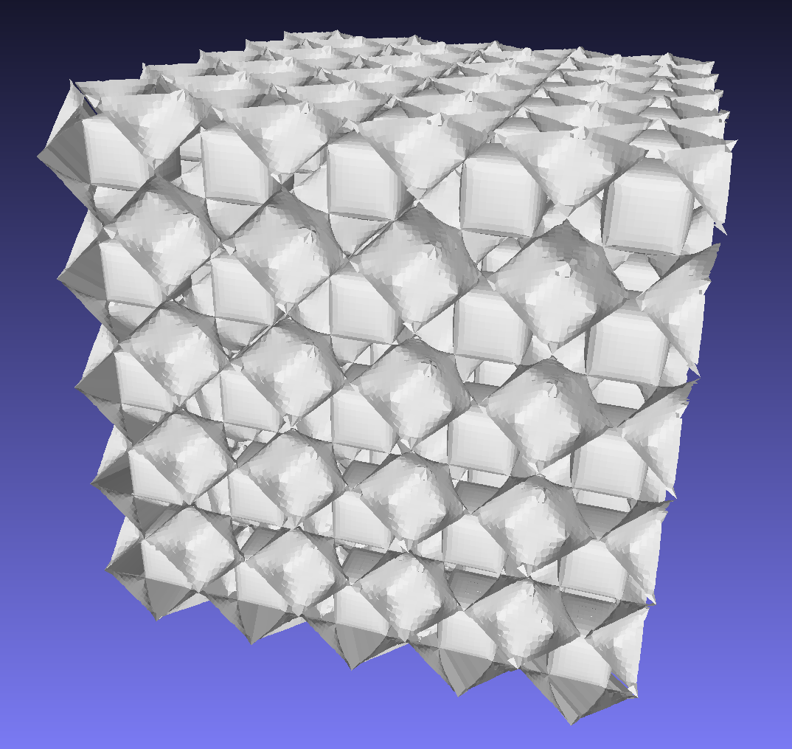
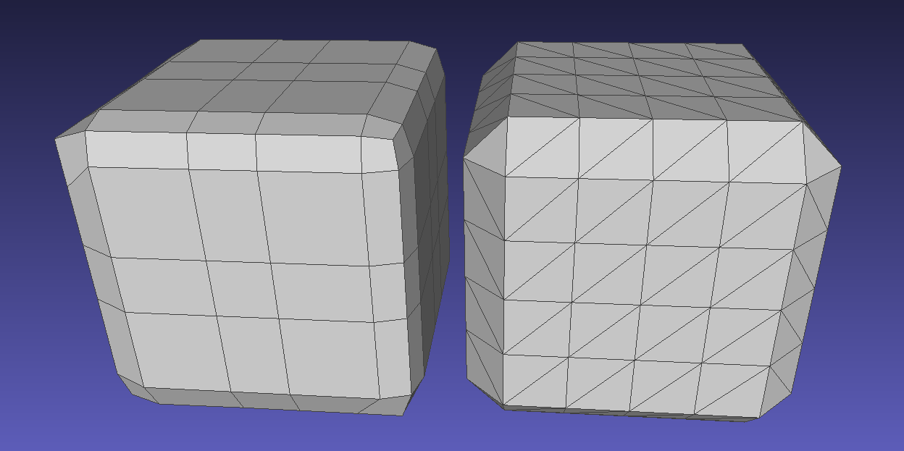

This package provides methods to compute a surface mesh representing an isosurface of a 3-dimensional scalar field. An isosurface is defined as the surface on which the value of this field is equal to a given constant, i.e. the isovalue. Depending on the isosurfacing method and the input data structure, the result is either a triangular, quadrilateral, or higher order polygonal indexed face set.
Algorithms
There are multiple algorithms to extract isosurfaces. This package contains Marching Cubes, topologically correct Marching Cubes, Dual Contouring, and Octree Marching. (References?)
Marching Cubes (MC)
MC processes all cells of the input domain individually. Each cell corner gets a sign (+/-) to indicate if it is above or below the isovalue. A new vertex is created on every cell edge where the sign changes, i.e. the isosurface is intersected. The vertex position is computed via linear interpolation of the scalar values of the incident corners. Depending on the configuration of signs at the corners the resulting vertices are connected to form triangles within the cell.
MC can process any input data structure that consists of hexahedral cells. In case of a conforming grid, MC produces a triangle mesh that is manifold in most scenarios. If the mesh is manifold and the isosurface does not intersect the domain boundaries, the mesh is also watertight. Compared to other approaches the algorithm often generates more and many thin triangles with acute angles. MC does not preserve sharp edges.
This algorithm is an extension to MC and provides additional guarantees. It generates a mesh that is homeomorphic to the trilinear interpolant of the input function inside each cube. Furthermore, the mesh is guaranteed to be manifold and watertight, as long as the isosurface does not intersect the domain boundaries.
TODO examples
Dual Contouring (DC)
DC creates one vertex in every cell that is intersected by the isosurface. Next, a face is created for each edge that intersects the isosurface, by connecting the vertices of the incident cells. For a uniform hexahedral grid, this results in a quadrilateral mesh.
The classical DC method requires the gradient of the scalar field. It is passed to the method as an additional parameter in the form of a functor. The default argument for this parameter assumes the gradient to be zero. Thus, for using the classical DC, the gradient has to be defined by the user.
Different versions of DC compute the vertex positions differently. Therefore, the vertex positioning is configurable with an optional parameter. Some of them do not require the gradient and therefore even work with the zero gradient.
Dual Contouring works on any domain but does not guarantee a manifold or watertight mesh. It creates less faces than Marching Cubes. The main advantage of DC over MC is the ability to represent sharp edges.

Figure 60.3 Isosurface of the IWP function generated by Dual Contouring.
Comparison
Algorithm
Domains
Faces
Manifold
Watertight*
Topologically correct
MC
Hexahedral
Triangles
no
no
no
TMC
Hexahedral
Triangles
yes
yes
yes
DC
All
Polygons
no
no
no
(* assuming the isosurface does not leave the given bounding box)

Figure 60.4 Comparison between a cube generated by Dual Contouring (left) and Marching Cubes (right).
Interface
Each algorithm is represented by a single functions. The function signature is the same for all algorithms:
template <typename Concurrency_tag = Sequential_tag, class Domain_, class PointRange, class PolygonRange>
The input is provided in the form of a domain (see Domains).
The iso_value parameter describes the grid value the isosurface should represent.
The output is in the form of an indexed face set that is written to the two collections points and polygons. The vertex positions are stored as Point_3 in points. Each face in polygons is a list of indices pointing into the points collection. Depending on the algorithm, the indexed face set may either store a polygon soup or a topological mesh.
Algorithms can run sequentially on one CPU core or in parallel. The Concurrency_tag is used to specify how the algorithm is executed and is either Sequential_tag or Parallel_tag. To enable parallelism, CGAL needs to be linked with the Intel TBB library. If the parallel version is not availible the sequential version will always be used as a fallback.
Domains
A domain is an object that provides functions to access the input data, its geometry, topology, and optionally its gradient. There are some predefined domain classes that wrap the input data and provide a generalized interface for the algorithm. Users can also define new domains by implementing the Isosurfacing_domain concept.
Implicit domain
The Implicit_domain represents the input function in an implicit form without storing any values. It takes a functor or lambda that computes the value of the function from the position of a vertex as parameter. Additionally, the bounding box and spacing between grid points have to be specified.
Cartesian grid domain
The Cartesian_grid_domain only takes a Cartesian_grid_3 as parameter. It represents a uniform grid of values that are either computed by the user or read from an Image_3. The constructor of Cartesian_grid_3 needs the number of grid points in each dimension and the bounding box. The values are read and written with value(x, y, z) where x, y, and z are the coordinates of a grid point. Alternatively, all required data can be copied from an Image_3.
Octree domain
The Octree_domain wraps an octree to be used by isosurfacing algorithms. The octree has to be already refined. ...
The following example shows the usage of the Marching Cubes algorithm to extract an isosurface. The domain is an Implicit_domain that describes a sphere by the distance to its origin as an implicit function.
The following example compares all provided algorithms to extract an isosurface. The domain is an Cartesian_grid_domain that describes a cube by storing the manhattan distance to its origin in a Cartesian_grid_3.
The following example shows how to compute an offset mesh. The original mesh is passed to an AABB_tree to allow fast distance queries. With the use of Side_of_triangle_mesh the sign of the distance function is flipped inside the mesh.
The following example shows how to extract an isosurface from an octree using Dual Contouring. The domain is an Octree_domain that describes a sphere by the distance to its origin stored in an octree. The octree is highly refined in one octant and only coarse in the others.


 1.8.13
1.8.13